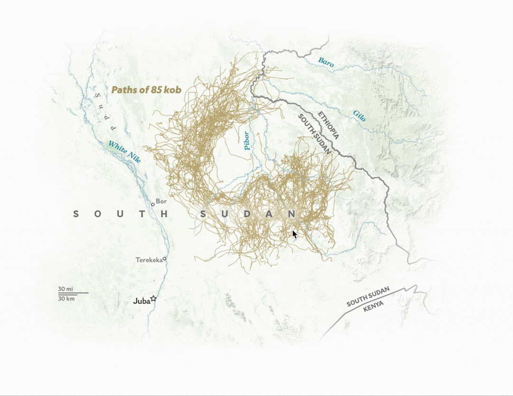

Mapping a little known animal migration was one of the toughest cartographic challenges I’ve had to face. Part of what makes the migration so successful is its complexity, so synthesizing it into something understandable to the lay person—particularly on mobile. I’m proud of the way I divided up this storytelling into multiple bite-sized chucks, each one building on the last. The map is built inline as part of a larger story, so readers have to scroll down in the page to see the map. Read the story here.
